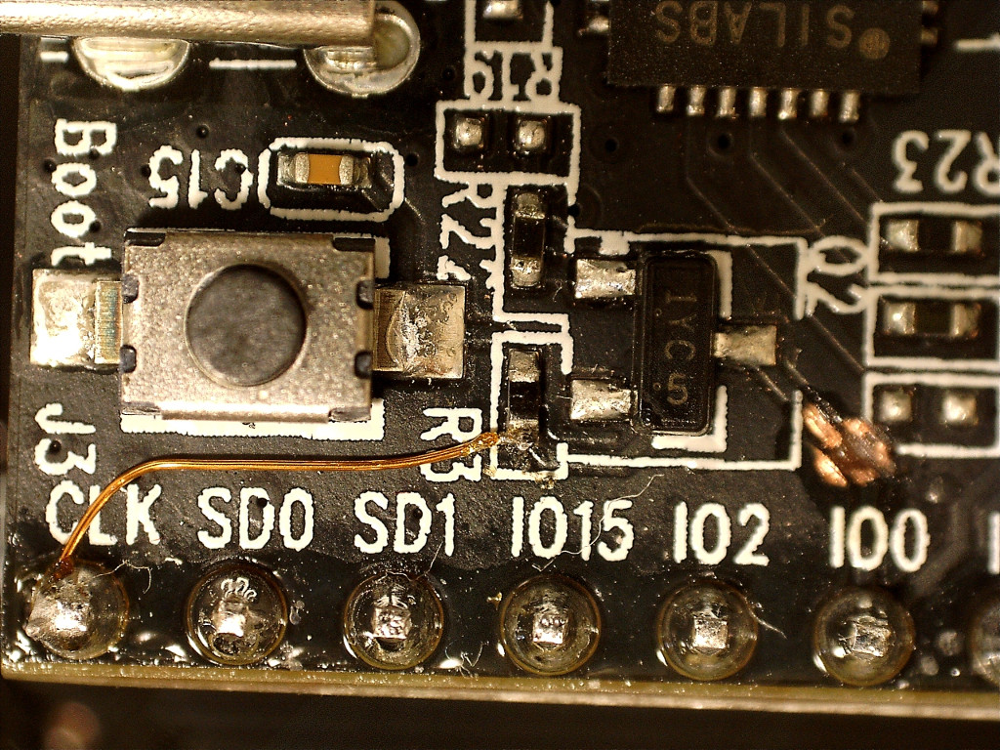

Published: 火 07 11月 2017
By Kaz Kojima
In articles .
tags: esp32 kicad
I'm trying another simple board for esp32 with ethernet. This is a board to mount ESP32 DevKit-C and Waveshare LAN8720 PHY module with a few extra parts. It can also use ESP-WROOM-32 chip directly instead of DevKit-C module.
KiCAD files for this board can be seen here as hardware/esp32-wslan8720. Notice that there are choices for this board.
One jumper for LAN8720 board which connects X'tal osc enable and NC pin and implement R1 only.
Two pattern-cuts and one jumper for DevKit-C and implement parts except R1. This uses TI TS5A3157 analog switch to select GPIO0 connection.
Solder ESP-WROOM-32 directly and
Use one jumper for LAN8720 and R1 only, or
Use parts except R1.
For the case 2, cut CLK line:
and cut boot switch line from GPIO0 and connect it to CLK pin:

For the first case, we need a jumper which
https://sautter.com/blog/ethernet-on-esp32-using-lan8720/
gives so as to connect enable pin of 50MHz X'tal OSC to NC pin of LAN8720 module connector. In this case, the 50MHz osc output connected directly the boot circuit. R1 limits the current when the boot circuit try to pull the line to GND. 75ohm works in my tests.
Proudly powered by Pelican , which takes great advantage of Python .
The theme is by Smashing Magazine , thanks!